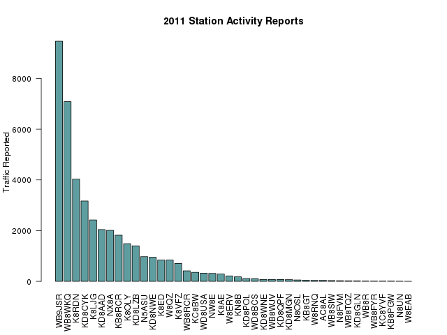

4. Individual Amateur Reporting
In addition to reporting by Emergency Coordinators and Net Managers, individual amateurs are also encouraged to make reports. There are three reports from individuals; Public Service Honor Roll, Station Activity Report, and Brass Pounder's League.
4.1. Public Service Honor Roll
The Public Service Honor Roll reporting combines activity in a number of categories. Stations get "points" for net checkins, traffic, Section level appointments, public service oriented web or other digital systems, and hours spent in public or emergency service.
If a station reports 70 points within a month, that station is listed in QST, the amateur radio journal. If a station is listed for 12 consecutive months, or for 18 months out of 24, the League will issue a certificate.
PSHR reporting for 2011 has been relatively flat across the year. The summer months tend to be higher due to bad weather and various public service events.

PSHR Results
Figure 3. Public Service Honor Roll Reporting
4.2. Station Activity Reports
Stations handling traffic are encouraged to submit Station Activity Reports (SAR) indicating the amount of traffic handled. 42 stations reported during 2011, up from 31 in 2010.
Since most of the traffic is handled by relatively few stations, and those stations tend to be the stations that report, the traffic totals reported are quite high. Stations handling a lot of traffic tend to be those stations that act as liaisons to Region or Area nets, so even though the number of stations reporting is quite small, the amount of traffic reported is considerably larger than the totals from net reports, which include only messages passed on Michigan nets. For 2011, Michigan stations individually reported 42,157 messages.

SAR Results
Figure 4. Station Activity Reports
4.3. Brass Pounder's League
Stations reporting 500 messages passed in a single month, or a total of 100 originations plus deliveries are eligible for Brass Pounder's league. This requires substantial dedication, and only a few stations achieve this award.
The stations qualifying in 2011 were:
Table 5. Brass Pounder's League
| Call | Name | Total |
|---|---|---|
| WB9JSR | John Wehmer | 9473 |
| WB8WKQ | Jeff Miller | 6665 |
| K8LJG | John Kroll | 1666 |
| K8RDN | Bob Berger | 583 |